僅供 UX 參考，不是規格。畫面是舊 prototype 的截圖（含假登入等已被取代的做法），不代表目前實作的樣子；
標題連到的 api-spec.html 是已過期的早期草案，API 請以後端文件為準。
依 module-specs.md（模組00–10）的順序，重新對照新版 prototype（含Google登入、我揪的團、Email標記、AI餐廳推薦、原生分享、留言板）截取的操作流程。舊版 flow-walkthrough.html 未涵蓋這些新功能，保留作為舊版對照，不再更新。
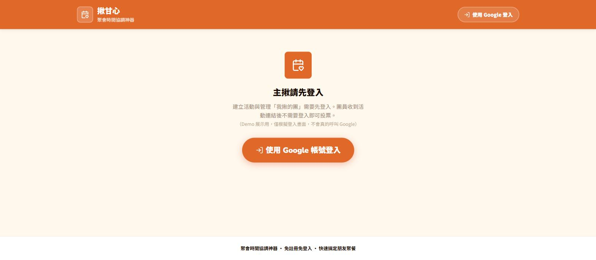
登入後看到的首頁，列出這個帳號名下的所有活動（示範活動／全部／進行中／已敲定篩選）。demo這裡是假登入寫死localStorage，正式版須改為向後端查詢、依帳號而非裝置。
新增對應模組00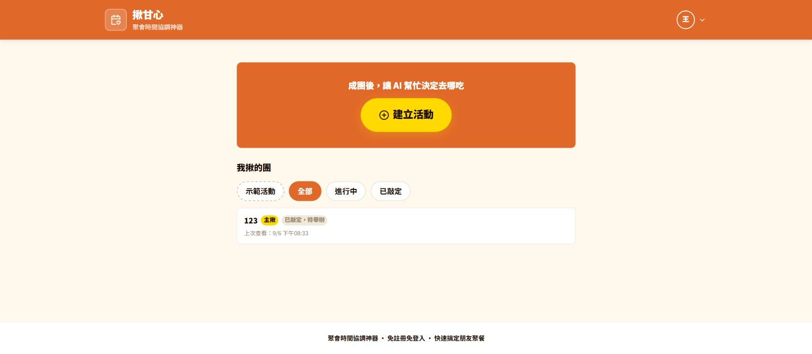
跟舊版相比唯一差異：主揪 Email 欄位不再是選填輸入框，改成鎖定顯示登入的 Google 帳號 Email，不可修改；暱稱仍可自訂。其餘欄位、候選時段選擇邏輯不變。
對應 PRD Story 001Email鎖定為新行為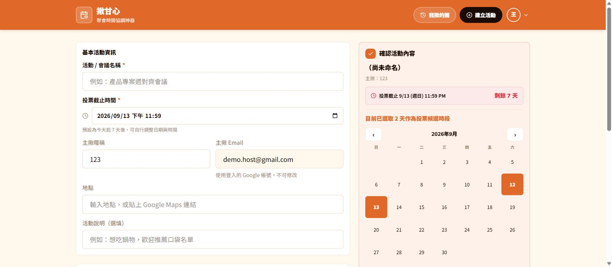
參與者填過一次暱稱後，同一裝置回來會自動帶入——這張截圖裡暱稱欄位已經帶出先前存過的值。Email、密碼皆選填，密碼用來保護同暱稱不被別人覆蓋。
對應 PRD Story 002本地預填為新增說明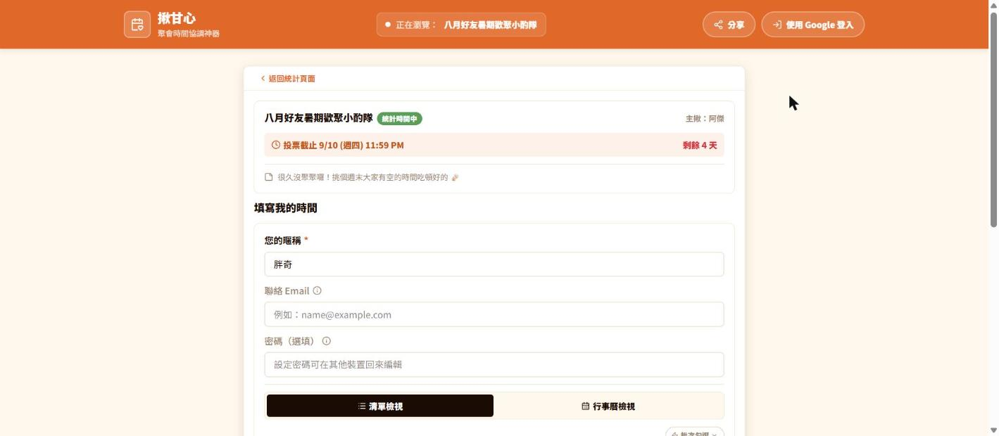
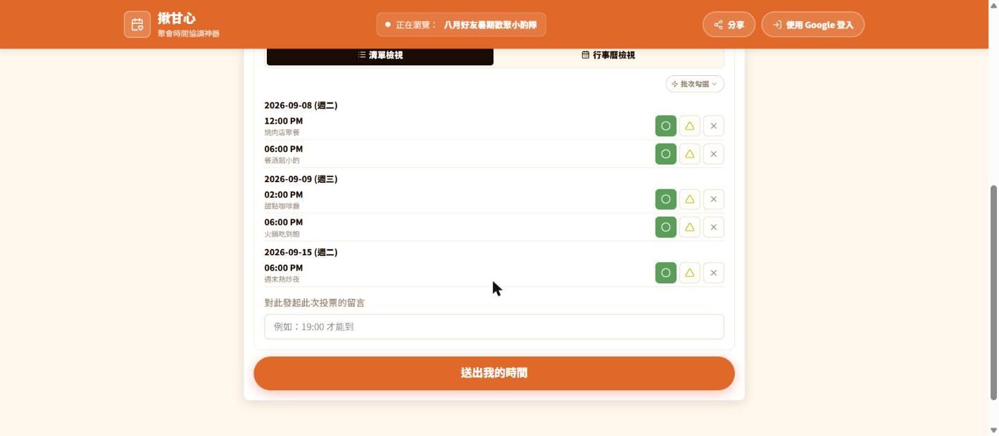
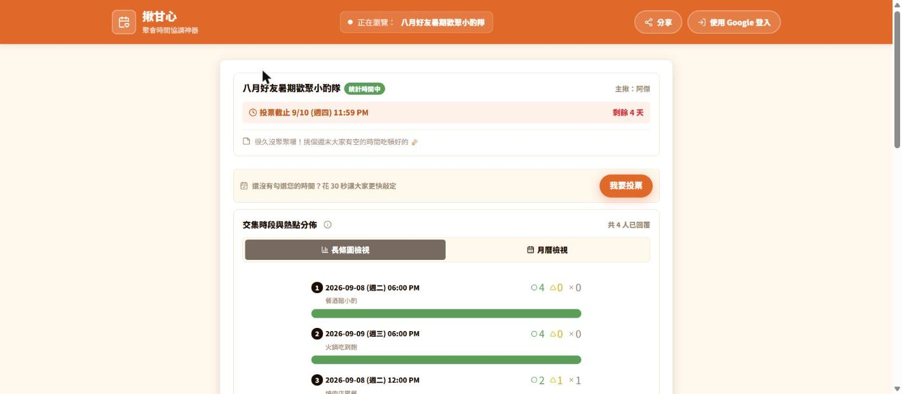
每位參與者名字旁多了一個信封圖示，標示這位參與者有沒有留Email，方便主揪知道系統通知涵蓋範圍、對沒留Email的人手動轉發。這張demo資料剛好4人都有留Email，只是恰好沒有示範「未留」的樣式，但欄位邏輯已確認存在。
新增對應模組03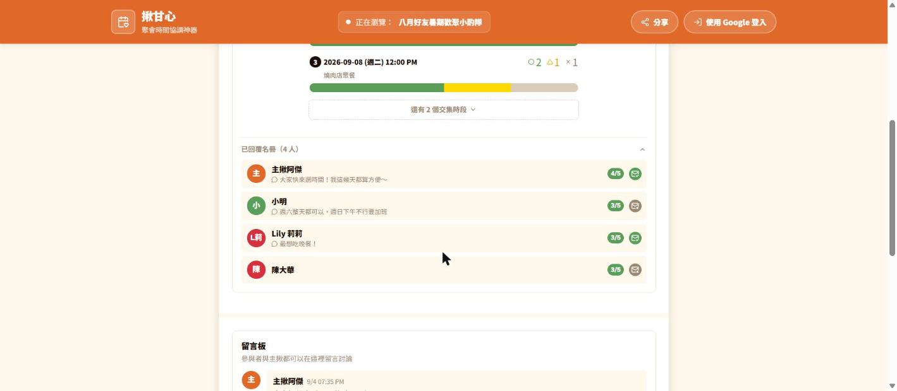
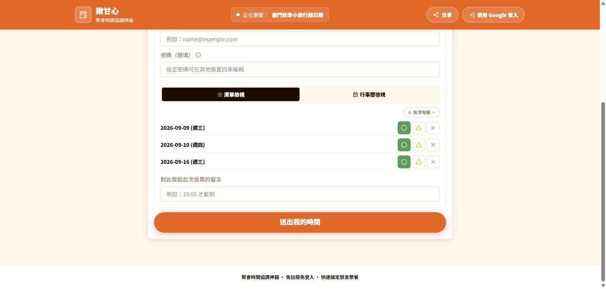
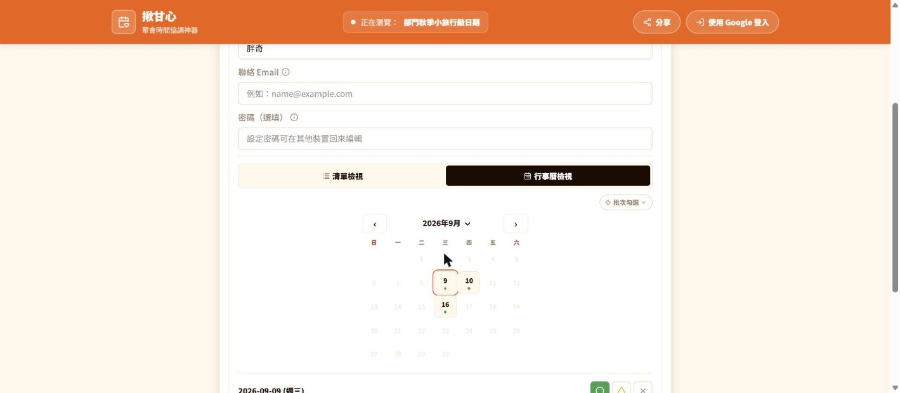
投票截止後參與者端變唯讀，不是等按送出才擋，而是一進頁面就鎖住。彙整結果仍正常顯示。
投票已截止對應 PRD Story 002 Scenario 9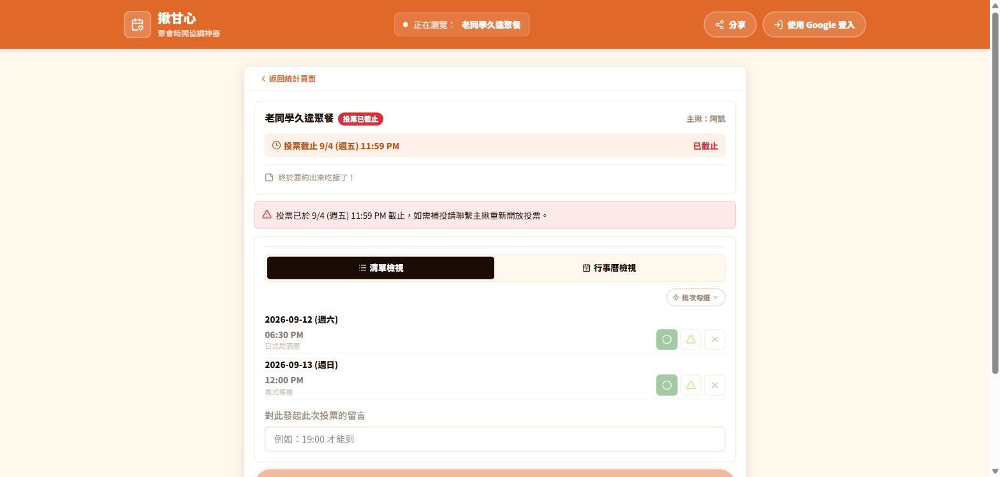
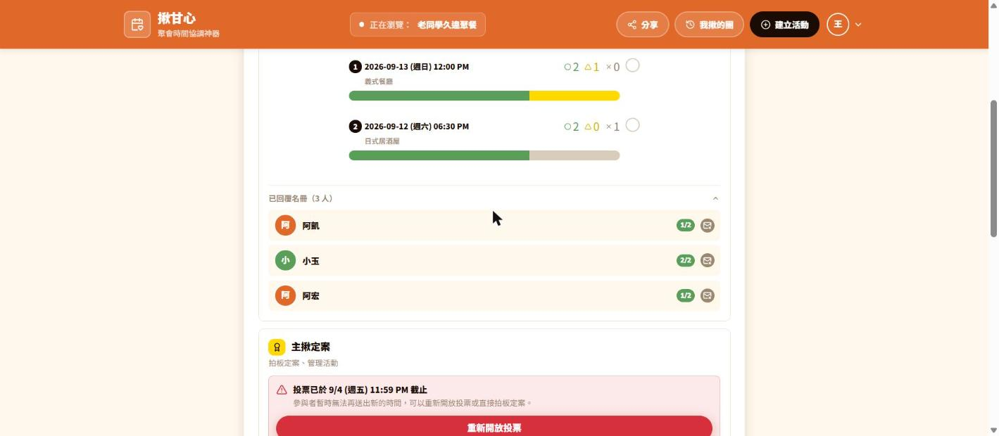
定案後主揪視角：出席名單只列出對最終時段勾「可行」的人；「試試AI推薦餐廳」入口；一鍵複製定案通知文字；分享按鈕；重新開放投票／取消活動管理入口。
已定案對應 PRD Story 004/005/006分享按鈕/AI入口為新增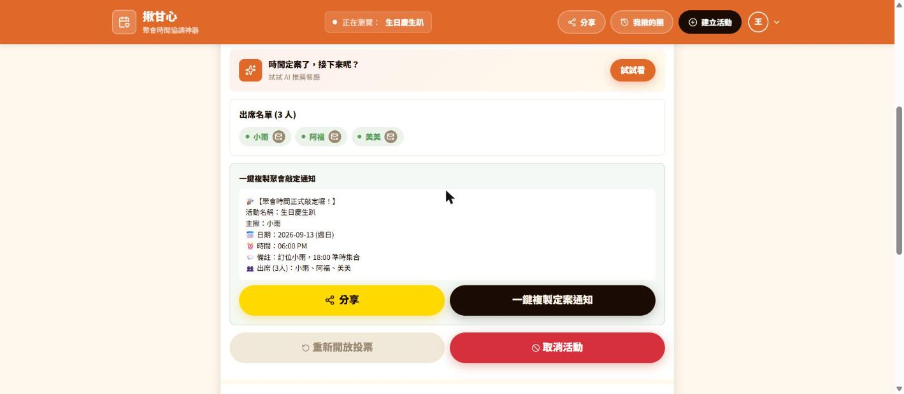
提供原生分享（Web Share API）、複製LINE分享文字、活動專屬連結三種管道。底部提示「此瀏覽器已自動儲存您為主揪，換裝置可用含密鑰的管理網址」——這是demo沿用舊版hostToken機制的痕跡，正式版建議改為登入即可跨裝置管理，不需要這組備援連結（見open-questions-for-pm.md）。
新增對應模組00/06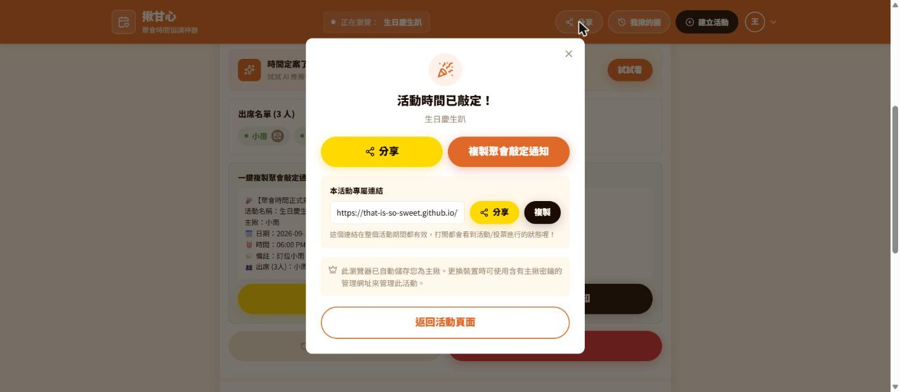
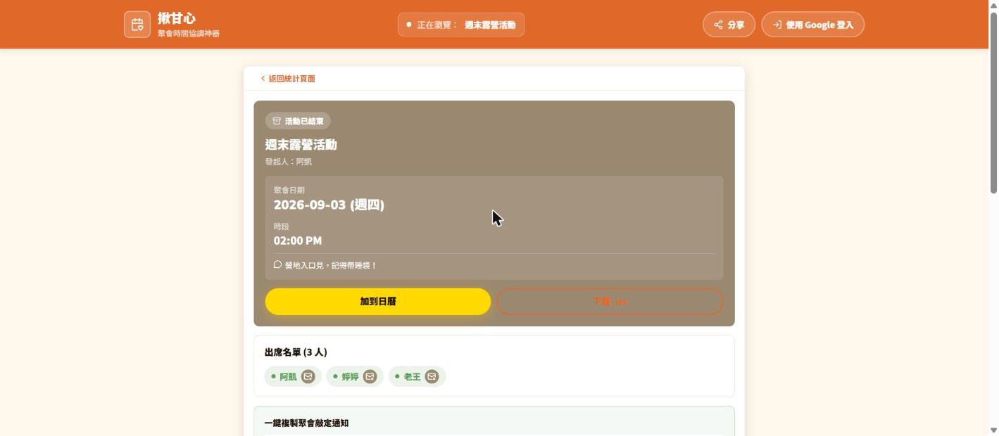
顯示「活動已取消」與取消時間，投票/彙整/定案全部關閉，但留言板仍然可以互動——這是刻意設計，跟「連結已失效」（下一張）會擋掉所有互動不同。
已取消對應 PRD Story 006 Scenario 1/3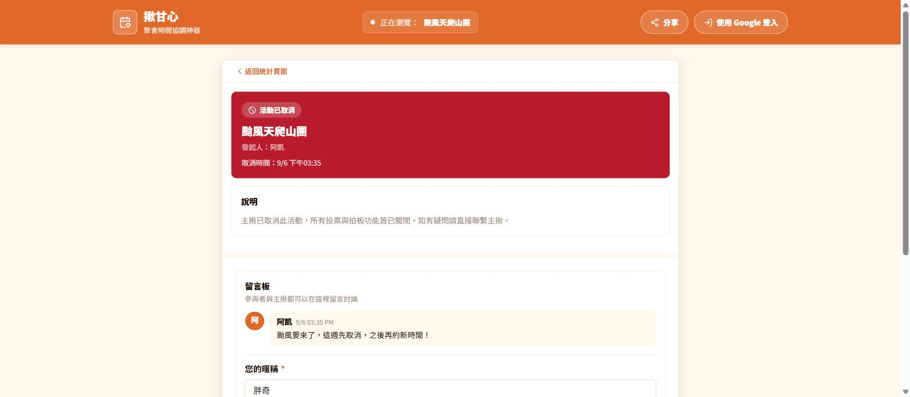
已定案超過7天或已取消超過7天，連結應該顯示專屬「連結已失效」文案並擋下所有互動。但目前prototype只丟出通用的「讀取失敗」訊息，跟活動ID不存在、網路錯誤等其他錯誤共用同一個畫面——這是PRD自己在文件裡標注的已知落差，Phase 1需要新增這個專屬畫面，不能照抄現有實作。
現況落差對應 PRD FR-10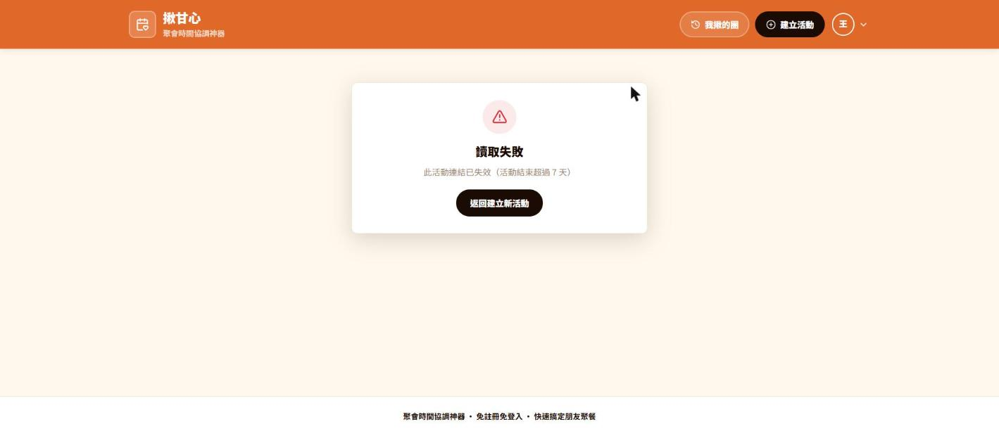
地點、與會關係、預算區間、人數規格、飲食偏好、硬體與情境（可複選）、其他需求（自由輸入），全部選填。標題旁顯示「本月已用 X/20 次」額度計數。
全新功能，PRD無書面規格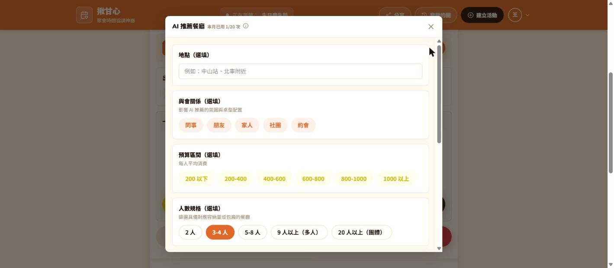
每張卡片附Google Maps連結與「選這家，就決定是這裡」按鈕。產生一次後額度計數會累加（demo顯示0/20變成1/20、2/20）。真實API是同步或串流回應尚未確認，會影響loading UI設計。
全新功能需與KK確認後端串接方式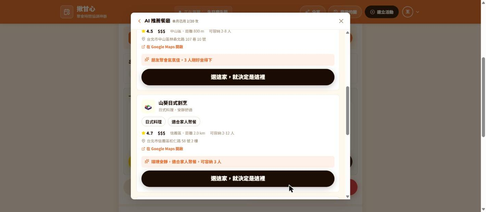
純文字、暱稱必填、內容1-200字。送出前會提示「留言會觸發通知信」（此圖未截到該提示，實際送出前才出現）。每頁最多10筆，有防濫用頻率限制。
對應 PRD Story 008 / FR-9，Must-have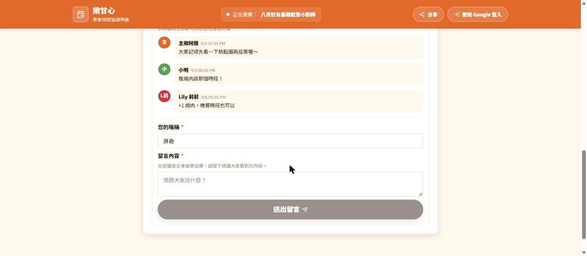